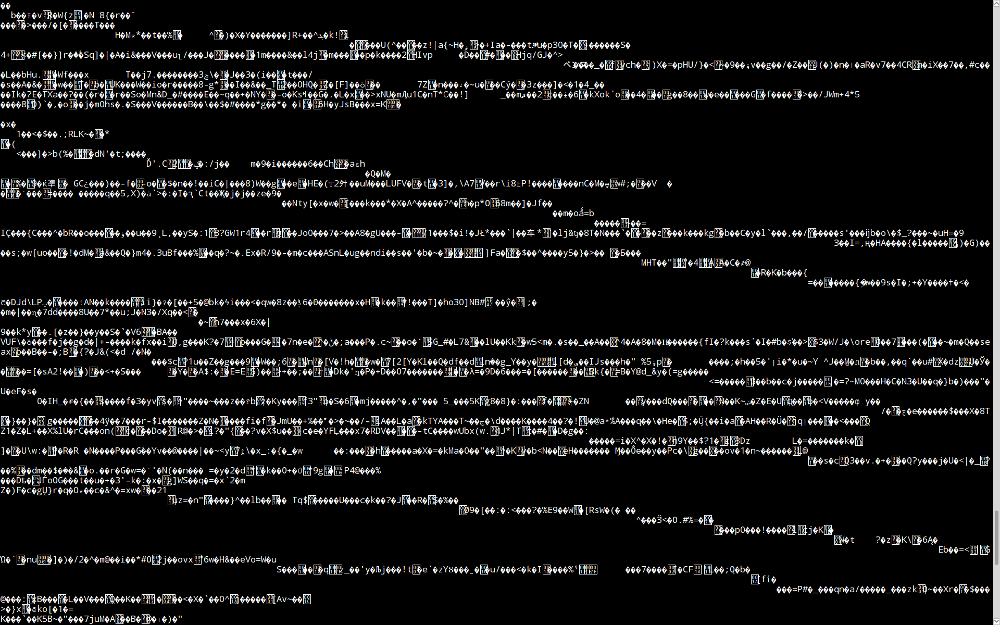

HellO
Hello! Welcome to an experimental page, made by somebody with no design sense whatsoever! Here, you will find some rudimentary experiments in HTML and CSS - no scripts! - along with some content I've made that you may be interested in. It used to be the homepage too, until I made a better organized one. <bye>
Well, we're still working on it. Though I promise you, the end result will be completely bug
Course Rating Table
Below is a list of ratings for the various courses I take, because I am too uncreative to think of anything else to include.
| Course | Material Rating | Lecturer Rating |
|---|---|---|
| 10120 | 4-star | N/A |
| 11120 | 3-star | 3-star |
| 12111 | 5-star | 4-star |
| 15111 | 3-star | 2-star |
| 16121 | 5-star | 5-star |
So why was this page made?
Would you believe that this is literally the first time I've used html? Seriously, even my last web project did not use html or css at all. You can see that web project in the Game page of this website - it is in an iframe here, which is linked to an svg image file with embeded javascript, no html involved. This is why I must work extra hard on this project, in order to obtain the necessary expertise on html and css, two of the basic building blocks of the web, so that I can help build an awesome web application for the team project. Let's all work hard!
Why is this page so disorganized?Because there isn't really any point to this page. This page is a sandbox for me to test various html and css elements so that I will know how to make a web page when I actually have something to write about. Here, though, I'm just throwing a bunch of unrelated content together in different layout elements, without some core content to draw you to, so it is quite chaotic. |
Will this homepage be replaced later?Maybe. Probably. This is the first page I've ever made in html, so it is more about testing than actual content. Given that this page lives inside the aboutme directory, though, I'm assuming that it'd probably be nice if I put in something like a well-formatted self introduction in the future. Perhaps, by the time you see this page, it would've already been filed under the Experiments tab above. Where it now resides. |